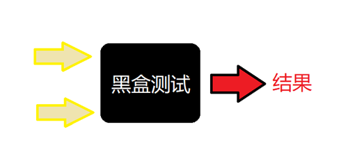
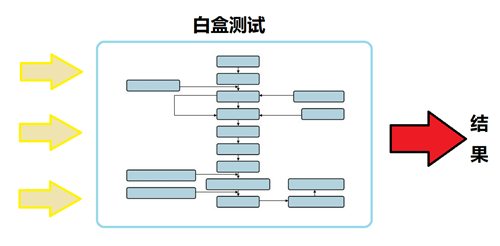

原文连接:https://www.cnblogs.com/liangmingshen/p/12011602.html
邓小平曾言：不管白猫、黑猫，能抓到老鼠就是好猫。
如果用在软件测试领域，这句话也一点都没错。不管黑盒、白盒，能找出Bug、发现缺陷，保证软件质量才是王道。
对于刚踏足软件测试的新手小白来说，黑盒测试、白盒测试绝对是入门必学词汇之一。不过，他们说的黑是什么黑？白又是什么白？两者的区别到底在哪里呢？且听我一一道来。
最大区别：关注对象不一样
黑盒测试和白盒测试，二者最大的区别应该就是测试时关注的对象不一样。
黑盒测试主要针对的是程序所展现给用户的功能，白盒测试主要针对的是程序代码逻辑，简单的说，就是前者测试最终展示功能，后者测试后台程序。
黑盒测试
黑盒，顾名思义就是：把测试对象看作一个不能打开的黑盒子。测试时，测试人员完全不用考虑盒子里面的逻辑结构和具体运作，只依据程序的需求规格说明书，检查程序的功能是否符合它的功能说明，检验输出结果对不对。

白盒测试
与黑盒恰恰相反，这种方法是把测试对象看作一个打开的透明盒子。测试时，测试人员会利用程序内部的逻辑结构及有关信息，通过在不同点检查程序状态，检验程序中的每条通路是否都能按预定要求进行正确工作。

举个栗子，加深理解
说到这里，我们来举一个生活中的小栗子，相信能更好的帮你理解这两种测试方法。
假设，小A和小B是一对情侣，决定在家做饭。小A让小B出门买菜，最好一个小时内能买齐回家。
如果在黑盒模式下，小A（测试人员）会为小B列出一张购买清单（所谓：需求规格说明书），然后告诉小B，现在是9:45，只要在10:45之前买齐所有东西，带着回家就可以了。

如果在白盒模式下，就可能是下面这样的情况。
小B达到指定的菜场后，小A开始电话远程指挥：
首先买肉，卖肉的摊位，你要去指定的那一家。
你现在进的是南门吗？走南门的话，进去，靠右走，一直走到最里面……
什么？你走的北门？如果是走北门的话，一进去，先左拐，走到头，到卖酸奶那里，往右拐，一直往前走……
跟老板说要买黑猪肉，要前腿，不要后腿，6两就够了。
好了，现在去买豆芽。
豆芽一定要看好日期，看看是不是今天的。如果不是今天的，就买昨天的。如果昨天的也没有，就不新鲜了。
哦，对了，有三种牌子的豆芽，一种散称的，两种袋装的。要是袋装的没有，就买散称的。如果你买散称的，你要看看根儿黑了没，别挑杆太肥的……
接下来……
总有人喜欢比较：黑盒测试和白盒测试到底哪个更好呢？其实，从上面的例子也不难看出，两者的优势各不相同。但无论采用哪种测试方法，毫无疑问都是为了找出缺陷，发现风险，从而确保软件的缺陷更少，质量更好。黑盒和白盒，始终交织出现在我们的测试工作中。